Accelerated Networking for AKS Nodes
In this blog post I would like to talk about Accelerated Networking, how it can improve internal communication inside an AKS cluster and how you can enable that for Linux and Windows AKS nodes.
But first, let's get the basics straight.
What is Accelerated Networking and why use it in AKS?
Accelerated Networking (AN) is something that has been around in Azure for a few years now - I think I have read about it for the first time around 2018. Until recently this functionality has been mainly mentioned in terms of classic Azure VMs or Virtual Machine Scale Sets (VMSS). It's not that long ago that the possibility for Accelerated Networking got introduced in Azure Kubernetes Service though, especially if we're talking about Windows nodes. When I tested this back in February 2022, support for AN in Windows nodes in AKS was still in private preview but fortunately, a few months later this has been included as part of standard AKS offering. Now, when you create an AKS cluster or a new node pool, be it Linux or Windows, Accelerated Networking will be enabled automatically for you. And this is a reason for celebration, my friend - you'll understand why when I show you the numbers!😼
But what is this Accelerated Networking that I'm talking about? Basically, it provides a way to significantly improve networking performance between VMs that have it enabled. Network traffic bypasses the Hyper-V Virtual Switch and lands directly at the VM's Network Interface Card (NIC), from where it's forwarded further to the VM itself. This reduces the overhead and the amount of control points that the network packets must travel through - this gives an opportunity to process many more packets during the same time span. In addition, since network policies will now be offloaded to hardware, it reduces the amount of software interruptions and the pressure on the CPU utilization of the host that the VM is running on. All of it can be observed when we lokk at the network performance tests later in this blog post.
Accelerated Networking is supported for most of the Azure VM families and types but there may be a few exceptions - I would recommend to always check if the VM SKU that your AKS nodes are targeting officially supports AN. You can check it here: Sizes for virtual machines in Azure
For example, if I'm using Standard_DS13_v2 I can go to "Memory optimized" section in the link above and verify that Accelerated Networking is supported for this VM type:
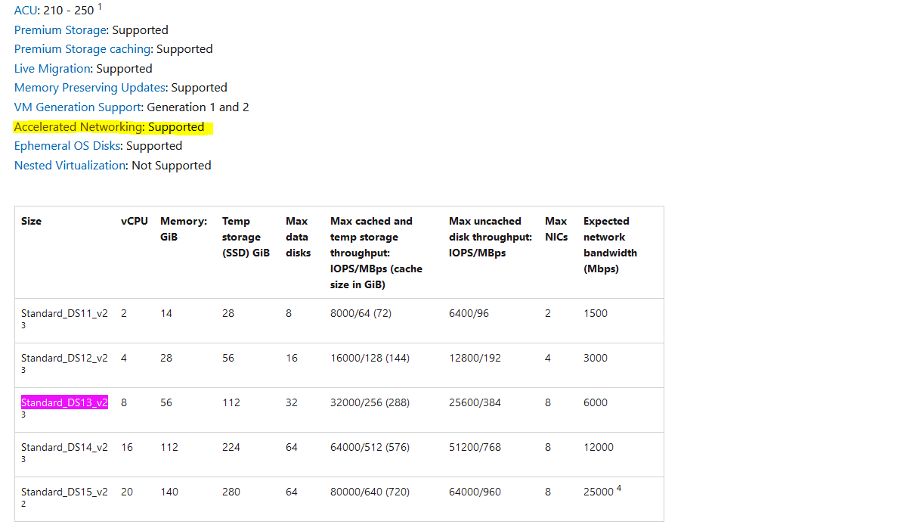
You can also add support for AN in a custom image as long as it's using the required drivers - you can read more on how to do that here: Custom images
I could have created my own diagram that illustrates Accelerated Networking but why do that when the one provided by Microsoft visualizes the concept in a straightforward and understandable way?😸
So, here it goes:

More information about benefits of Accelerated Networking and what it is can be found in official Microsoft documentation: What is Accelerated Networking?
Important note: Accelerated Networking will provide most significant impact on network performance inside a virtual network but it will have minimal effect on the cross-network communication, external communication or when communicating with on-premises resources. In AKS this feature will provide significant improvement to communication between nodes inside the cluster since those are typically deployed in a single virtual network.
Now, let's see the actual numbers and if network latency actually changes significantly when Accelerated Networking is enabled.
Network performance test with and without Accelerated Networking in AKS
In order to see the actual effect of enabled Accelerated Networking in AKS nodes, I've executed a set of network performance tests with and without AN, both on Linux and Windows nodes, - and the numbers are in! Spoiler alert: the difference is very much visible!😼
For measuring network latency I've used the tools recommended by Microsoft: SockPerf for Linux nodes and latte.exe for Windows nodes. You can find more information about the tools here: Test VM network latency
Linux nodes
Preparations
First, choose 2 Linux nodes in your AKS cluster where one will act as a server and the other will act as a client - this is needed in order to test network latency during node-to-node communication with SockPerf. Also, make a note of IP for the node that will act as server. Following commands can help you retrieve that information:
# Get all nodes in AKS cluster and note NAME of 2 Linux nodes in addition to INTERNAL-IP for the node that will act as server
kubectl get nodes -o wide
Now we need to log into both of the nodes simultaneously - we can do that by starting a prviliged debug container on the node which will give us an opportunity to create an interactive shell session with the Linux node. This guide provides more information on how to do that: Create an interactive shell connection to a Linux node
# Start interactive shell inside Linux node in AKS
kubectl debug node/[NODE_NAME] -it --image=mcr.microsoft.com/dotnet/runtime-deps:6.0
Finally, install and configure SockPerf on both nodes - I recommend to check a few links in Additional resources section for more information on how to use SockPerf:
# 1. Install SockPerf - on SERVER and CLIENT node
apt-get update
apt-get install sockperf
# 2. Start SockPerf on SERVER node - we'll use a default port which is 11111
sockperf sr -i [NODE_INTERNAL_IP]
SockPerf supports multiple types of tests from the client. Today we'll execute following tests:
- ping-pong - run sockperf client for latency test in ping pong mode;
- throughput - run sockperf client for one way throughput test;
- under-load - run sockperf client for latency under load test;
Results of Ping-Pong test
# Start SockPerf on CLIENT in Ping-Pong mode - run for 60 seconds with 64 byte messages
sockperf pp -i [SERVER_NODE_INTERNAL_IP] -m 64 -t 60 --tcp
Without Accelerated Networking 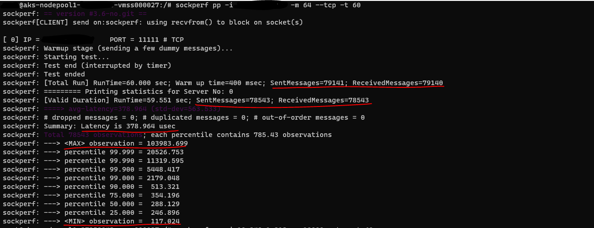
With Accelerated Networking 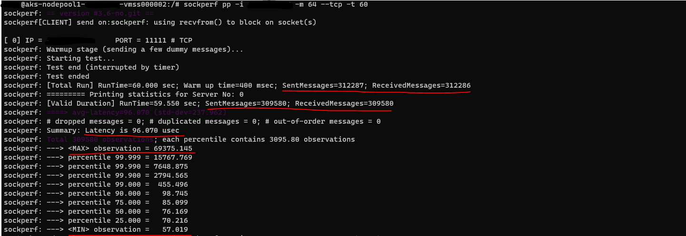
# Start SockPerf on CLIENT in Ping-Pong mode - run for 60 seconds with larger messages (10 000 bytes)
sockperf pp -i [SERVER_NODE_INTERNAL_IP] -m 10000 -t 60 --tcp
Without Accelerated Networking 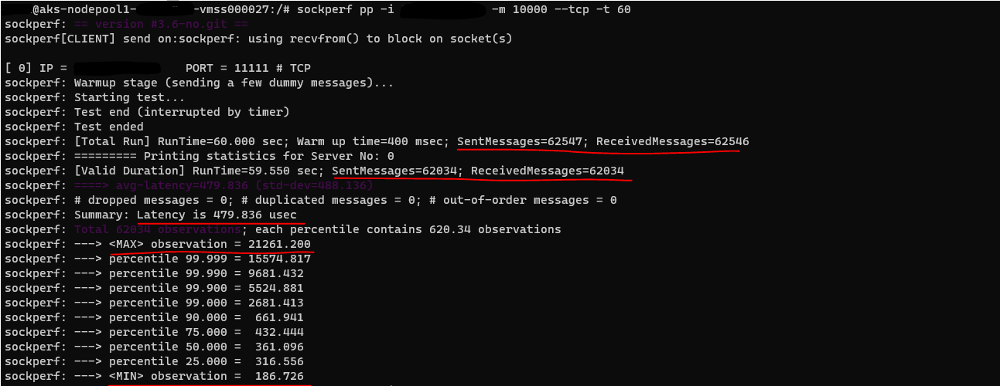
With Accelerated Networking 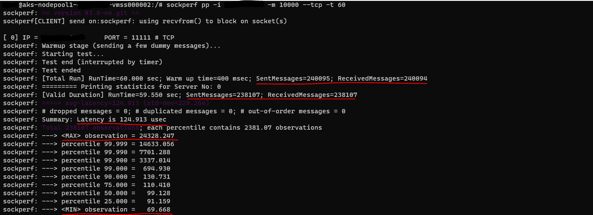
Results of Throughput test
# Start SockPerf on CLIENT in Throughput mode - run for 60 seconds with 64 byte messages and maximum number of messages-per-second
sockperf tp -i [SERVER_NODE_INTERNAL_IP] -m 64 -t 60 --mps=max --tcp
Without Accelerated Networking 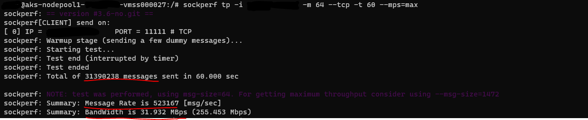
With Accelerated Networking 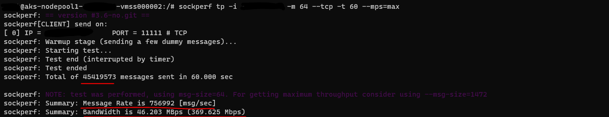
# Start SockPerf on CLIENT in Throughput mode - run for 60 seconds with larger messages (1472 bytes) and maximum number of messages-per-second
sockperf tp -i [SERVER_NODE_INTERNAL_IP] -m 1472 -t 60 --mps=max --tcp
Without Accelerated Networking 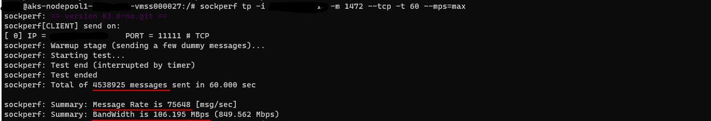
With Accelerated Networking 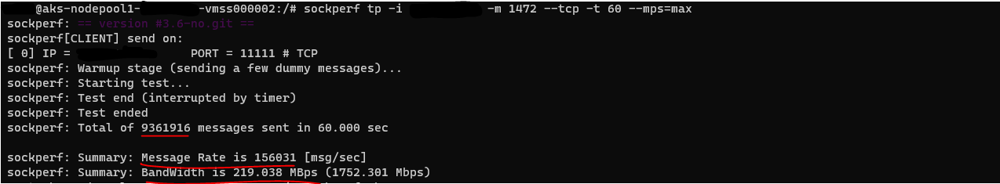
Results of Under-Load test
# Start SockPerf on CLIENT in Under-Load mode - run for 60 seconds with 1472 byte messages and maximum number of messages-per-second
sockperf ul -i [SERVER_NODE_INTERNAL_IP] -m 1472 -t 60 --mps=max --tcp
Without Accelerated Networking 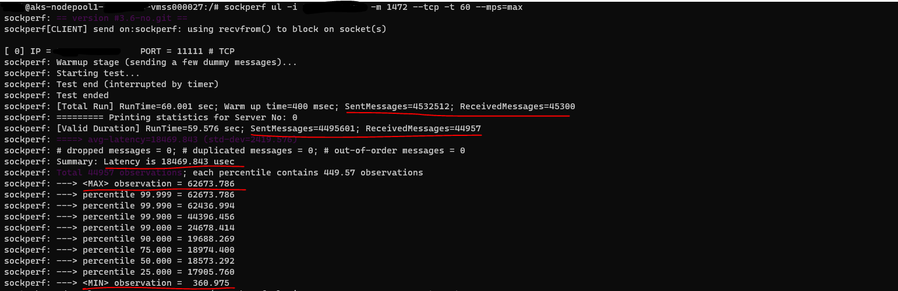
With Accelerated Networking 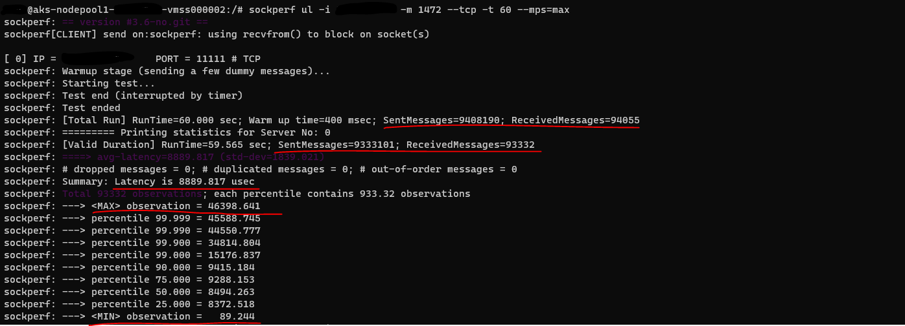
# Start SockPerf on CLIENT in Under-Load mode - run for 60 seconds with larger messages (10 000 bytes) and maximum number of messages-per-second
sockperf ul -i [SERVER_NODE_INTERNAL_IP] -m 10000 -t 60 --mps=max --tcp
Without Accelerated Networking 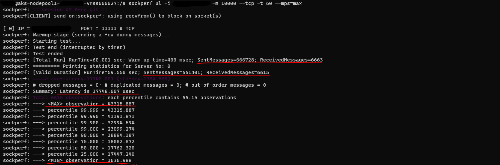
With Accelerated Networking 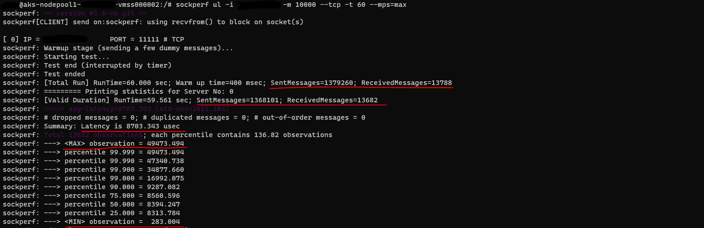
In all of these tests we can clearly see that enabling Accelerated Networking results in a significant improvement: higher message throughput and much lower latency - in some cases this is more than a 50% reduction in latency which is pretty amazing!🙀
Now, let's see if the trend is the same for Windows nodes.
Windows nodes
Preparations
Just as we did for Linux, first you need to choose 2 Windows nodes in your AKS cluster where one will act as a server and the other will act as a client - this is needed in order to test network latency during node-to-node communication with latte. Also, make a note of IP for the node that will act as server.
Following commands can help you retrieve that information:
# Get all nodes in AKS cluster and note NAME of 2 Windows nodes in addition to INTERNAL-IP for the node that will act as server
kubectl get nodes -o wide
Now we need to log into both of the nodes simultaneously - for Windows nodes it's a bit harder than for Linux nodes since you need to set up a jumpserver. This is out of scope for this blog post but the guides below provide more information on how you can set up SSH or RDP connection to Windows nodes in AKS:
Create the SSH connection to a Windows node
Connect to Windows Server nodes using remote desktop protocol (RDP) connections
Once you've logged into the Windows nodes, you need to install and configure latte on both nodes - I recommend to check a few links in Additional resources section for more information on how to use latte.exe:
# 1. (PowerShell) Install latte - on SERVER and CLIENT node
mkdir "C:\tools"
Invoke-WebRequest -OutFile "C:\tools\latte.exe" -Uri "https://github.com/microsoft/latte/releases/download/v0/latte.exe"
latte behaves a bit differently than SockPerf. You need to provide exactly the same command on server and on client with the only difference where you need to add -c parameter to a client command which will signal latte that this specific call is coming from a client machine. You need to ensure that you run command on server and on client node for every execution because latte exits after every completed execution.
Test with 64 message size and duration of 60 seconds
# 1. (CMD) Start latte on SERVER node - ensure that you're running the command from where latte.exe is located
latte -a [NODE_INTERNAL_IP]:[PORT] -t 60 -m 64
# 2. (CMD) Start latte on CLIENT with the same configuration but with additional -c parameter to identify that it\'s a client
latte -c -a [SERVER_NODE_INTERNAL_IP]:[PORT] -t 60 -m 64
Without Accelerated Networking 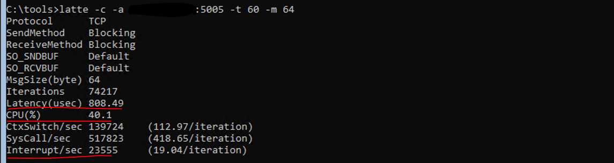
With Accelerated Networking 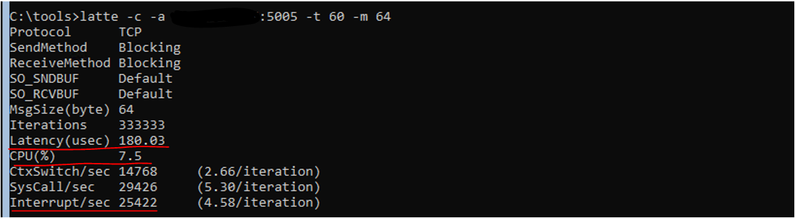
Test with larger message size (10 000 bytes) and duration of 60 seconds
# 1. (CMD) Start latte on SERVER node - ensure that you're running the command from where latte.exe is located
latte -a [NODE_INTERNAL_IP]:[PORT] -t 60 -m 10000
# 2. (CMD) Start latte on CLIENT with the same configuration but with additional -c parameter to identify that it\'s a client
latte -c -a [SERVER_NODE_INTERNAL_IP]:[PORT] -t 60 -m 10000
Without Accelerated Networking 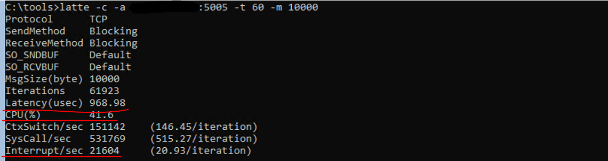
With Accelerated Networking 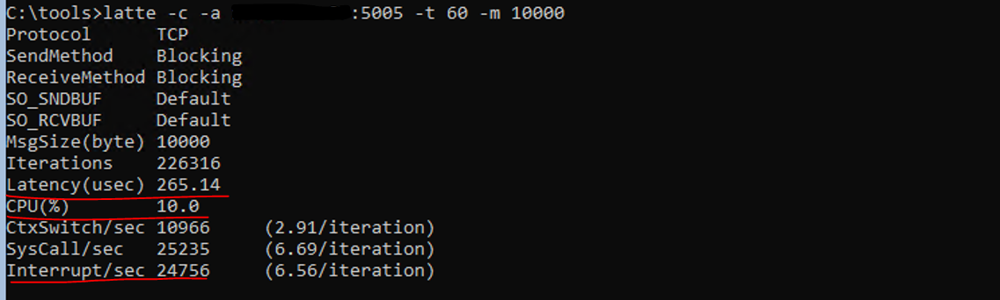
Test with larger message size (10 000 bytes) and iterations
# 1. (CMD) Start latte on SERVER node - ensure that you're running the command from where latte.exe is located
latte -a [NODE_INTERNAL_IP]:[PORT] -i 65100 -m 10000
# 2. (CMD) Start latte on CLIENT with the same configuration but with additional -c parameter to identify that it\'s a client
latte -c -a [SERVER_NODE_INTERNAL_IP]:[PORT] -i 65100 -m 10000
Without Accelerated Networking 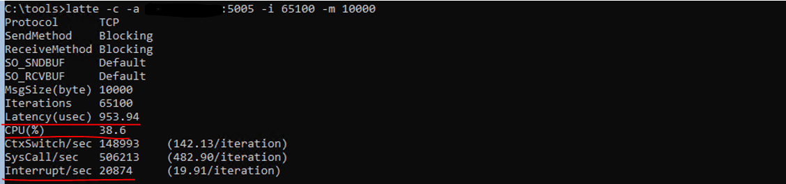
With Accelerated Networking 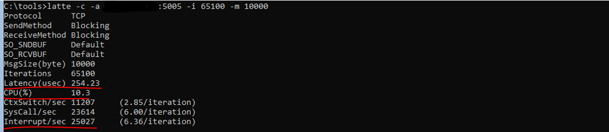
And in the case of Windows nodes the results are pretty impressive as well! Latency and CPU load are 70-80% lower when Accelerated Networking is enabled. When it comes to interruptions you can see that interruption per iteration is much lower when AN is enabled as well which correlates with the benefits mentioned in the section above. 🦾
I mean, that's quite cool, don't you think?😻 Especially when it's so easy now to get it out of the box in AKS - let's see how we can do that!
Enable Accelerated Networking for AKS nodes
Fortunately for all us, from now on (spring/summer 2022) if you create a new AKS cluster or a new Linux/Windows node pool, Accelerated Networking is enabled by default for you. You can verify that with:
Azure Portal: go to a resource group where AKS node pools are provisioned (normally it’s different from the one where AKS resource itself is provisioned). If you're using a default resource group naming, it will have a format like this MC_[AKS_RESOURCE_GROUP_NAME]_[AKS_CLUSTER_NAME]_[AKS_CLUSTER_LOCATION]. Example: MC_akstest-rg_akstest_northeurope. In the chosen resource group locate node pools (VMSS resources) and navigate to those. In Networking section you can see a property called "Accelerated networking" and if it's enabled/disabled:
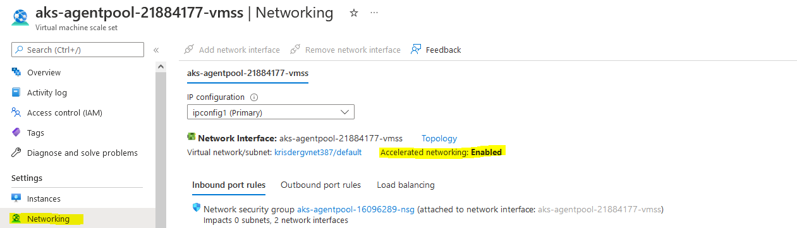
Azure CLI: you need to make a note of your AKS cluster name and resource group where it's deployed - once it's done, we can run below commands to check if Accelerated Networking is enabled for node pools in the chosen AKS cluster:
# 1. Get the name of the resource group where AKS node pools are deployed
az aks show --resource-group [AKS_CLUSTER_RESOURCE_GROUP_NAME] --name [AKS_CLUSTER_NAME] --query nodeResourceGroup
# 2. Get the names of the AKS cluster node pools that we need to check AN property for
az aks nodepool list --resource-group [AKS_CLUSTER_RESOURCE_GROUP_NAME] --cluster-name [AKS_CLUSTER_NAME] `
--query "[].{Name:name}"
# 3. For each node pool, check if Accelerated Networking is enabled on a VMSS level
# Please remember that node pool name consists of "aks" which is appended automatically by Azure and the node pool name itself,
# f.ex. "akswinpol", "akslinpol"
# Resource group here is the one that was retrieved in step 1
az vmss show --name [AKS_NODE_POOL_NAME] --resource-group [NODE_POOL_RESOURCE_GROUP_NAME] `
--query "virtualMachineProfile.networkProfile.networkInterfaceConfigurations[].enableAcceleratedNetworking"
In case you have older node pools which were deployed before Accelerated Networking was supported in AKS, you might want to consider to enable that to start receiving the benefits of improved network performance.
In order to do that you will need to create a new node pool and migrate all the workloads from the initial node pool. If you're using an IaC tool for provisioning your AKS clusters, you can also handle it in the deployment template but I've seen cases where such a change may cause a full re-creation of a cluster and it will require some downtime and you might not want that. So another approach can be to simply create a new node pool where AN will be enabled by default (as long as it's a supported VM SKU which the most of them are😺).
Alternative approach is similar to what a node image upgrade does, just that you will do it for the whole node pool:
1.Retrieve configuration details of the node pool that is currently active - we want to create a new node pool that is the same as the existing node pool with only difference, which is enabled Accelerated Networking.
# 1. Retrieve configuration details of the node pool that is currently active
az aks nodepool show --cluster-name [AKS_CLUSTER_NAME] --resource-group [AKS_CLUSTER_RESOURCE_GROUP]
--name [INITIAL_NODE_POOL_NAME]
2.There are quite a few properties you can see in the output - a few to make a note of are count, currentOrchestratorVersion, enableAutoScaling, maxCount, minCount, maxPods, nodeTaints, vmSize. Now we can create a new node pool based on the existing node pool's configuration - please note that the name of the node pool must be different from the initial node pool (and renaming of the node pool is unfortunately not supported in AKS).
# 2. Create a new node pool based on existing node pool's configuration
az aks nodepool add --cluster-name [AKS_CLUSTER_NAME] --name [NEW_NODE_POOL_NAME]
--resource-group [NODE_POOL_RESOURCE_GROUP_NAME] --kubernetes-version [CURRENT_ORCHESTRATOR_VERSION]
--os-type [NODE_POOL_OS] --node-count [NODE_COUNT] --enable-cluster-autoscaler
--min-count [MIN_COUNT] --max-count [MAX_COUNT] --max-pods [MAX_PODS] --node-vm-size [VM_SIZE] --node-taints [NODE_TAINTS]
3.Move workloads to the new node pool and delete the old node pool - it's a good idea to verify that all of your workloads have PodDisruptionBudget configured to avoid application downtime😉
# Cordon existing node pool to forbid scheduling workloads to it (use kubectl edit node [NODE_NAME] to see selector value for agentpool)
kubectl cordon -l agentpool=winpol
# Drain cordoned node pool to move all workloads to a newly created node pool:
kubectl drain -l agentpool=winpol --force --delete-local-data --ignore-daemonsets --grace-period=10
# Once workload migration is successful, delete old node pool:
az aks nodepool delete --cluster-name [AKS_CLUSTER_NAME] --resource-group [AKS_CLUSTER_RESOURCE_GROUP_NAME]
--name [INITIAL_NODE_POOL_NAME]
If you have a lot of nodes and heavier applications, you might not want to drain the whole node pool at once, but take it gradually, scaling down the node pool and draining node for node - that way you can avoid CPU throttling and resource exhaustion.
And we're finished! Now the migrated workloads can start benefiting from networking goodies offered by AN feature in AKS.
Additional resources
Some good resources on Accelerated Networking and tools used for network performance testing:
- Add a node pool to AKS cluster
- latte - GitHub
- Sockperf – UDP/TCP Latency and Throughput Benchmarking Tool
- Using sockperf with VMA
- SockPerf - Manpage
That's it from me this time, thanks for checking in!
If this article was helpful, I'd love to hear about it! You can reach out to me on LinkedIn, Twitter, GitHub or by using the contact form on this page 😺
Stay secure, stay safe.
Till we connect again!😻